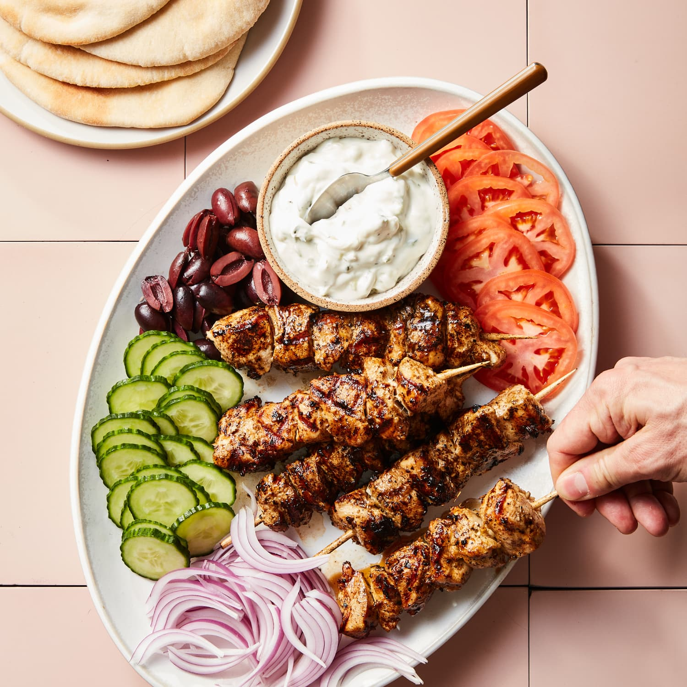

Souvlaki

Souvlaki is a popular Greek dish consisting of skewered and grilled meat, usually served with pita bread and various accompaniments. Here's a simple recipe for chicken souvlaki:
Ingredients:
For the Marinade:
- 1.5 pounds (700g) boneless, skinless chicken breasts or thighs, cut into bite-sized pieces
- 1/4 cup olive oil
- 1/4 cup plain Greek yogurt
- 3 cloves garlic, minced
- 1 teaspoon dried oregano
- 1 teaspoon dried thyme
- 1 teaspoon smoked paprika
- 1 teaspoon ground cumin
- 1 teaspoon ground coriander
- Salt and black pepper to taste
For Serving:
- Pita bread
- Tzatziki sauce
- Sliced tomatoes
- Sliced cucumbers
- Red onion, thinly sliced
- Fresh parsley, chopped
Instructions:
- Marinate the Chicken:
- In a bowl, combine olive oil, Greek yogurt, minced garlic, oregano, thyme, smoked paprika, cumin, coriander, salt, and pepper.
- Add the chicken pieces to the marinade, ensuring they are well coated. Cover and refrigerate for at least 1 hour, or overnight for best results.
- Skewer the Chicken:
- Preheat your grill or grill pan over medium-high heat.
- Thread the marinated chicken pieces onto skewers.
- Grill the Souvlaki:
- Grill the skewers for about 5-7 minutes per side or until the chicken is cooked through and has a nice char.
- Prepare the Accompaniments:
- Warm the pita bread on the grill or in the oven.
- Assemble your souvlaki by placing the grilled chicken on the warm pita bread.
- Add sliced tomatoes, cucumbers, red onions, and a generous dollop of tzatziki sauce.
- Sprinkle with fresh parsley.
- Serve:
- Serve the chicken souvlaki immediately, and enjoy!
Enjoy your homemade chicken souvlaki with all the delicious accompaniments!